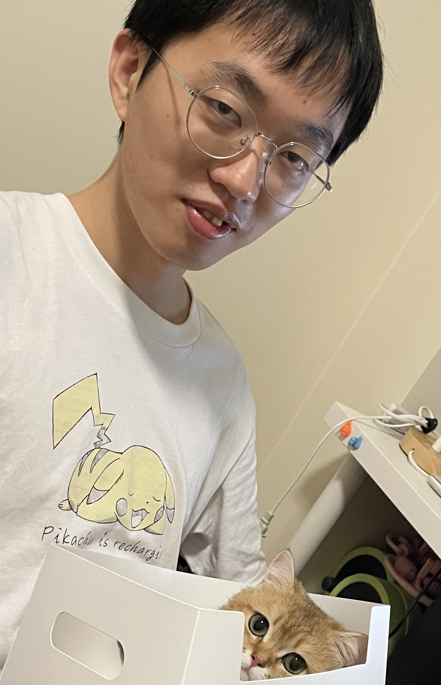

I am currently pursuing a master's degree at South China University of Technology, with research interests including thermal error compensation for precision CNC machine tools, time series prediction, transfer neural networks, and particle damping vibration reduction.

Here are some projects that I have participated in developing. Each project reflects my technical capabilities and problem-solving approaches.